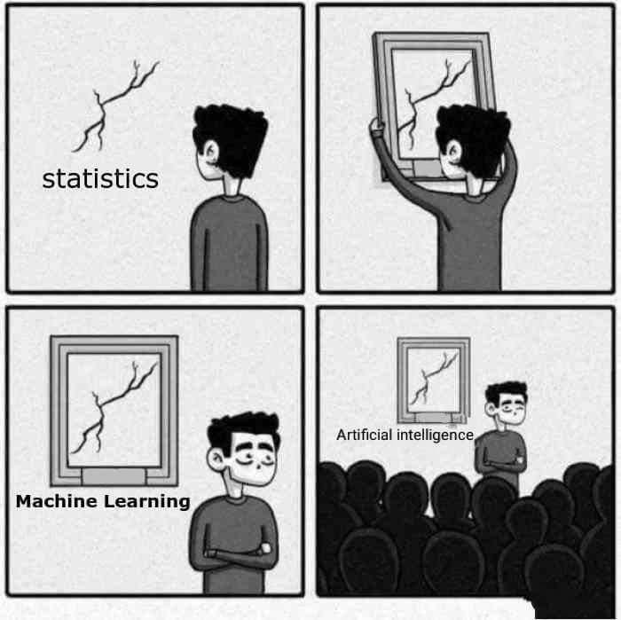
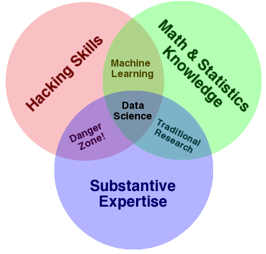

One well-instituted tool can ruin the career of a theory that cannot use it.
—Mary Douglas
I don’t think Computational Social Science (CSS) will ever become an autonomous field. Right now, CSS is more akin to a trading zone in which different disciplinary cultures manage to exchange ideas, metaphors, and techniques.
As such, there’s no point in creating exclusionary boundaries around CSS. That would be bad for trade.1
Most importantly, CSS is distinct from previous interdisciplinary efforts in that it is mainly driven by advances in digital technology and it is associated with a new professional group.
Trading Zones
Two groups can agree on rules of exchange even if they ascribe utterly different significance to the objects being exchanged; they may even disagree on the meaning of the exchange process itself. Nonetheless, the trading partners can hammer out a local coordination, despite vast global differences.
(Galison 1997, 783, cited in Gorman 2010)
When I describe CSS as a trading zone, the argument I’m trying to make is that there are seemingly insurmountable cultural divides that are not going away anytime soon. For example, some years ago DiMaggio (2015) noted that computer scientists tend to trust human judgment more than social scientists do. Computer scientists have developed many machine learning algorithms with the hopes of imitating human judgment (i.e., the “gold standard”); but social scientist want to adopt these new techniques with the hope that they can remove unreliable human judgments.
Cultural exchange in the CSS trading zone is riddled with many similar ironies.
This Time is Different
The CSS trading zone is mainly characterized by two recent phenomena that distinguish it from earlier interdisciplinary efforts like cybernetics or cognitive science. The first is the dramatic increases in computing power and information storage. I refuse to elaborate on this very obvious point.
The second is the emergence of a new professional group sometime around the 2010s: the data scientist. It first started in tech companies—e.g., Google, Microsoft, Amazon, Facebook, Twitter, Netflix, Spotify, etc. But soon enough data scientist were to be found everywhere, including non-profits and government agencies.
What exactly is a “data scientist”? No one knows for sure. But companies are hiring and universities are providing legitimacy via publications and newly minted masters programs (Donoho 2017; Spector et al. 2022).2
At first glance, a lot of data science is just statistics. Thus, traditional data analysts discovered they could boost their salaries via superficial adjustments to their vocabulary, see Figure 1 (a). For example, they no longer fitted statistical models, they trained machine learning algorithms; they began using the word classifier when talking about logistic regression; experiments became A/B tests; one of them once described logistic regression as “a single layer neural network with a sigmoid activation function”; another one repackaged OLS as a form of “artificial intelligence” in a corporate report.
Similarly, social scientists discovered they could find jobs outside academia by calling themselves data scientists and advertising their social science training as the elusive “substantive expertise” in Figure 1 (b).


The Aesthetic
But there’s more.
CSS has embraced a certain aesthetic or set of norms that mirror those of the “data scientist.”
Here it is, in list form:
You are supposed to use at least one open-source programming language like Python, R, Julia, or JavaScript.
Your laptop is supposed to have some stickers signaling some form of group loyalty towards at least one of these languages.
You are supposed to write code—and pretty much everything else—in a modern text editor (VS Code, Jupyter Lab) or IDE (RStudio, PyCharm).
You are supposed to use version control (i.e., git) and share your projects online (e.g., GitHub).
You are supposed to care a great deal about reproducibility and replication.
You are supposed to waste precious time trying to figure out \(\LaTeX\).
Perhaps you have recently decided to adopt Quarto, if you haven’t done so already.
You are supposed to adhere to some form of “hacker culture”—e.g., the idea that information should be free, access to computers should be unlimited, authority should be mistrusted (and replaced with some form of decentralization), etc.
The Content
What can I find in this trading zone?
Here’s a non-exhaustive list:
New forms of data—e.g., the “digital trace data” created through people’s online behavior, including network data. Also included are digital archives of historical texts ranging from books, administrative records, and newspapers. New data wrangling skills are necessary to deal with all this (perhaps using R’s
dplyror Python’spandas). Learning how to access these new forms of data also requires picking up new skills—e.g., querying APIs or via webscrapping (perhaps using R’srvestor Python’sBeautifulSoup). Although beware of relying too much on corporate APIs (see Freelon 2018).New forms of creating data via online crowdsourcing—e.g., via Amazon’s Mechanical Turk, Prolific, or whatever it is people are using these days.
Old methods applied in new settings, such as online experiments (Kohavi et al. 2020).
Agent-based modeling and other computationally intensive forms of computer simulation, a tradition that goes all the way back to Thomas Schelling’s model of segregation and that benefited a lot from the idea of object-oriented programming (Smaldino 2023).
Network data and associated modeling techniques (Rawlings et al. 2023). The ideas behind social network analysis have a long interdisciplinary history in sociology, anthropology, psychology, and mathematics. Due to previously mentioned advances in computation—and the creation of the Internet—our ability to collect network information has greatly increased and we’re starting to see the rise of a much broader—but fragmented)—field of “network science” that also includes computer scientists (e.g., Kleinberg), physicists (e.g., Barabassi), and statisticians (e.g., Snijders, Hancock).
New tools for analyzing text-as-data (Evans and Aceves 2016; Grimmer et al. 2022; Rodriguez et al. 2023). Some people out there consider CSS to be synonymous with the application of these methods to social science questions.
Interestingly, this has opened the doors for combining (1) epistemological frameworks traditionally associated with qualitative research with (2) modern tools for pattern recognition or “unsupervised learning” (Nelson 2020; Brandt and Timmermans 2021). It should come as no surprise to see traditional social science splits—such as “deductive vs inductive” or “causal vs interpretive”—reappear in the CSS trading zone.
The Future
Cybernetics or Cognitive Science.
As mentioned earlier, I don’t think CSS will ever become an autonomous discipline. It may be the case that it becomes a historical oddity, much like the short-lived cybernetics movement of the 1950s; or it might become a more resilient interdisciplinary effort, much like cognitive science. Both of them—in case you didn’t know—where also driven by innovations in computer technology.3
The available technologies in every historical period have always constrained our scientific theories via analogy and metaphor.
At all stages of Western history, available technology has constrained the analogies used to think about the operations of the human mind and body. For instance, water technologies—pumps, fountains, etc.—provided the dominant metaphor behind the ancient Greek concept of the soul—the ‘pneuma’—and the humorist theories that dominated Western medicine for 2000 years (Vartanian 1973); the gears and springs of clocks and wristwatches played a similar role for early mechanist thinking during the enlightenment (e.g., La Mettrie’s L’Homme Machine, 1748); hydraulics for Freud’s concept of libido; telephone switchboards for behaviorist theories of reflexes; and so on. It is no coincidence that the cognitive revolution co-occurred with the advent of computers.
Boone and Piccinini (2016, pp. 1511–12)
The most obvious example is the analogy between “cognitive systems” and “digital computers” at the core of cognitive science. But this was also true of cybernetics, which saw examples of negative feedback loops stabilizing all sorts of technical, biological, and social systems. Similarly, computational social scientists will continue to extend computational metaphors and tools to aid our understanding of more traditional social phenomena. There’s so much work I could cite here, I won’t even try.
Unsurprisingly, many have described cognitive science as a powerful role model for CSS (e.g., Lazer et al. 2009). But perhaps we might end up like cybernetics—i.e., very influential, still relevant, largely forgotten, and with every good thing about it absorbed into nearby disciplines no longer involved in trade.
Much of the hype surrounding artificial intelligence these days resembles the “cybernetics craze” of the 1950s and 1960s (Kline 2015, chap. 3). Individual researchers are incentivized to jump on the bandwagon and ultimately bite off more than what they can chew. If this goes unchecked, CSS might end up as minor historical footnote, and all trade will halt.
References
Footnotes
Matt Salganik has made this point before, although for slightly different reasons; he jokingly argues that we should be happy with defining CSS simply as “anything that’s cool.” See An Introduction to Computational Social Science.↩︎
Spector et al. (2022, p. 7) as “the study of extracting value from data—value in the form of insights or conclusions.” It’s impossible to create exclusionary boundaries around such a definition. But that should not matter as long as companies continue to recruit and students continue to enroll.↩︎
See Kline (2015) for cybernetics. See Thagard (2023) for cognitive science.↩︎